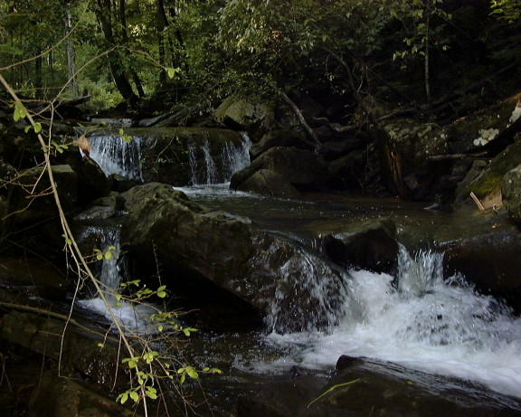

(photo courtesy Shane Hulsey)

(photo courtesy Shane Hulsey)
(photo courtesy Shane Hulsey)
(photo courtesy Shane Hulsey)
| Rebel Creek.
A bizarre shot (only adds to the mystery, huh?)
(photo courtesy Shane Hulsey) |
|
|
More water spots
partially obscuring an poorly placed log
(photo courtesy Shane Hulsey) |
| Rebel Creek scouting
trip.
(photo courtesy Shane Hulsey) |
|
|  | Rebel Creek drops
without the runnable water.
(photo courtesy Shane Hulsey) |